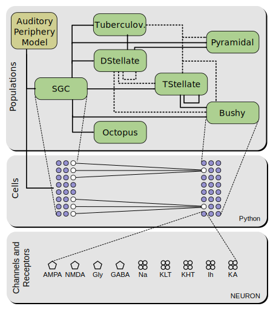

Architecture of CNModel¶
CNModel is built in a layered architecture that provides both high-level tools for constructing and simulating networks, as well as low-level access to the individual components. The model consists of three major pieces: cell types, which describe the morphology and membrane physiology of the various cell types in the cochlear nucleus; synapse types, which describe the strength, kinetics, and short-term plasticity of the many synaptic connections; and populations, which describe the aggregate organization of cell types, including their distribution within the nucleus and their patterns of connectivity.

Cells¶
The cell types found in the cochlear nucleus (bushy, t-stellate, etc.) are each represented in CNModel as classes that inherit from the base Cell class. One instance of any of these classes represents exactly one neuron, and internally manages any number of NEURON sections and mechanisms.
Each class is responsible for determining the morphology and intrinsic membrane properties of the cell it represents. Additionally, cell classes define the properties of their synapses in a cooperative manner: the pre- snd postsynaptic cells each create half of the synapse.
Morphology can be procedurally generated (usually a single somatic section, perhaps with another for a dendrite and/or axon), or it can be loaded from an SWC file. After the cell morphology is established, the membrane is “decorated” with channels using a ChannelDecorator object.
Cell classes may be further divided into a class hierarchy. For example, the base DStellate class is further inherited by DStellateRothman and DStellateEager classes that each implement different D-stellate models that have been published previously. To simplify (and in many cases to automate) the creation of cells each base cell class (Bushy, SGC, TStellate, etc.) implements a create method that can be used to generate instances from any of the subclasses.
Synapses¶
Every synapse in CNModel is represented by an instance of the Synapse class. This class contains two objects: a Terminal, and a PSD. Synapses are created by calling the connect method of the presynaptic cell with the postsynaptic cell as an argument:
pre_cell.connect(post_cell)
When connect is called, the presynaptic terminal is created by calling
pre_cell.make_terminal(), and the postsynaptic receptors are created by
calling post_cell.make_psd(). In this way, both pre- and postsynaptic
cells are given a chance to influence the creation of the synapse.
CNModel implements most synapses in two different ways. The first is a simple synapse that implements variable amplitude, short-term plasticity, and double- exponential rise/fall kinetics. This synapse is relatively efficient to compute and simple to configure. The second synapse implementation is a much more physiologically detailed model that includes stochastic release from multiple release zones per terminal, synaptic cleft diffusion, and state models of postsynaptic receptors. This synapse is computationally expensive but may capture important behaviors that are not possible with the simpler implementation.
Populations¶
Populations are objects that encapsulate a group of cells sharing a common cell class. Each base Cell class has a corresponding Population class that implements the organization of many cells within the nucleus and the patterns of connectivity between populations.
Conceptually, a Population represents all cells of a particular type within the nucleus. When a population is created, it initially decides how many cells is will represent and how to distribute properties across those cells. For example, an SGC population describes 10k cells distributed uniformly across the tonotopic axis. Initially, none of these 10k cells are created; rather, each cell is simply represented as a virtual placeholder, and only instantiated when it is explicitly requested or when it is required to satisfy the input requirements for another cell.
Populations are connected to each other in much the same way cells are:
pre_pop.connect(post_pop)
Like the virtual cells, however, this connection does not create any synapses, but instead merely records the fact that one population of cells projects to another. Once the populations of interest are created and connected, the user then manually instantiates only the cells that they wish to record from, and finally the entire network of presynaptic inputs is automatically instantiated.
Because populations manage the creation of synaptic connections between large groups of neurons, they are also responsible for ensuring that the appropriate patterns of connectivity are followed. For example, this allows us to ensure that bushy cells are automatically connected to auditory nerve fibers coming from a relatively narrow window across the tonotopic axis, whereas D-stellate cells integrate the same inputs across a broader window.
Physiological parameters¶
Throughout the model we use physiological parameters (channel kinetics, synaptic strengths, convergence ratios, etc.) that are often derived from published reports. In an attempt to make the provenance of these parameters clear, we have separated them from the source code and embedded them in annotated tables. These tables are found in cnmodel/data, and are automatically parsed by the model as they are needed.
Morphology¶
The model implements the ability to use morphological reconstructions of cells, as rendered in hoc files, the native NEURON format. These reconstructions can be decorated with ion channels and synapses according to pre-specified tables or pre-defined rules.
Unit testing¶
CNModel attempts to reproduce several specific published observations. The complexity of the model makes it quite fragile–small modifications to one physiological parameter may have unexpected (and sometimes unnoticed) consequences in the output of the model.
To combat this unavoidable fragility, CNModel includes a large battery of unit tests that are used to ensure the model output is stable across modifications and platforms, and that it does reproduce our target observations within reasonable limits. As such, any modification to the model should usually be followed soon after by running the unit tests (these depend on the py.test package and may be invoked by running the included test.py script).
Auditory nerve input¶
CNModel builds from the auditory periphery model developed by Zilany et al. (2014). The periphery model converts auditory stimuli into spike trains for auditory nerve fibers of a specific CF and SR group.
CNModel uses the Python version of the auditory periphery model as implemented by Rudnicki and Hemmert (available from https://github.com/mrkrd/cochlea). This version does not require MATLAB, and in some simulations may run slightly faster because there is no delay associated with loading (and unloading) MATLAB. The interface is otherwise exactly the same, and the model type can be selected at runtime.
An alternative approach is to use the original auditory periphery model. Because this model was developed in MATLAB, CNModel uses a Python-to-MATLAB bridge that transparently invokes the periphery model in a background process. When using CNModel, is is generally not necessary to manually interact with MATLAB in any way; this interaction is wrapped within functions in the cnmodel/an_model subpackage.
At present, there is no mechanism for feedback from the cochlear nucleus model back into the auditory periphery model. As such, the output of the periphery model is a convenient place to do some caching–we can precompute auditory nerve spike trains in response to various sound stimuli and reuse those spike trains to improve the computational performance of the nucleus model. This caching is performed automatically, but relies on the use of Sound objects (described below) as a mechanism for storing and retrieving cached spike trains.
Generating sound stimuli¶
Sound stimuli are defined as subclasses of cnmodel.util.sound.Sound. Each subclass (for example, TonePip and NoisePip) defines the function for generating a sound waveform, but also provides a unique key that is used to store and retrieve auditory nerve spike trains that were generated with a particular stimulus.
Sound objects may be passed directly to SGC cells or populations, and the necessary spike trains will be automatically computed (or read from cache).